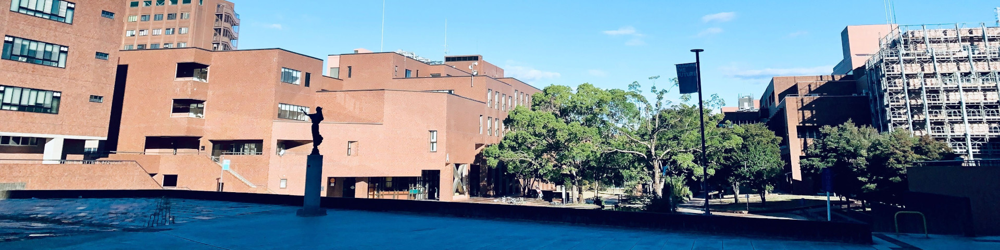
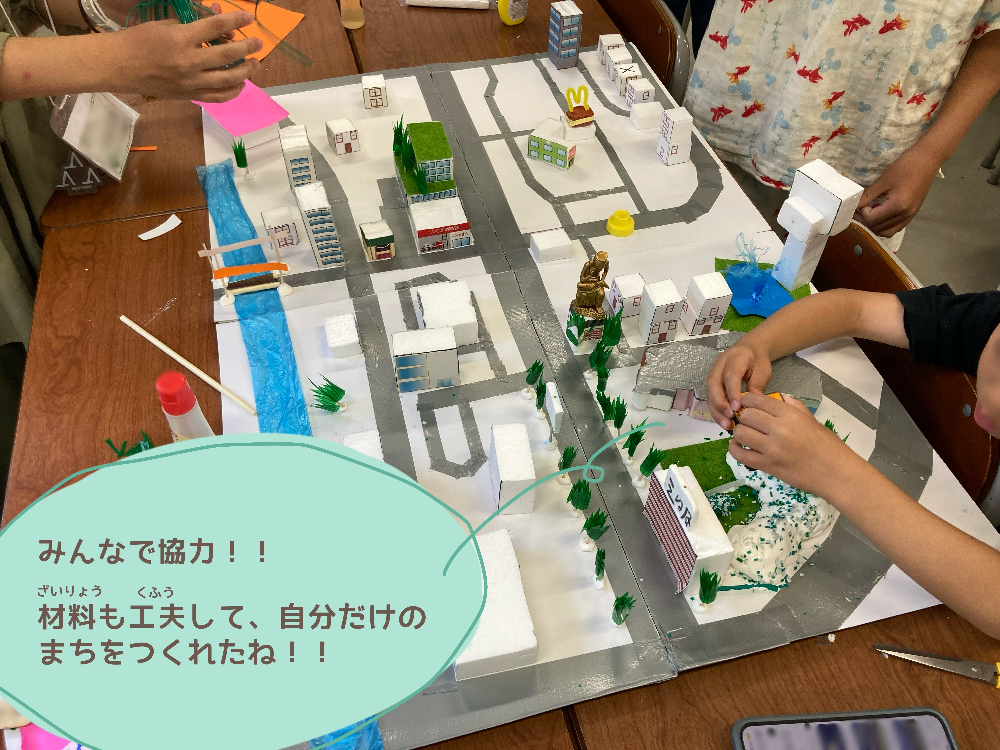
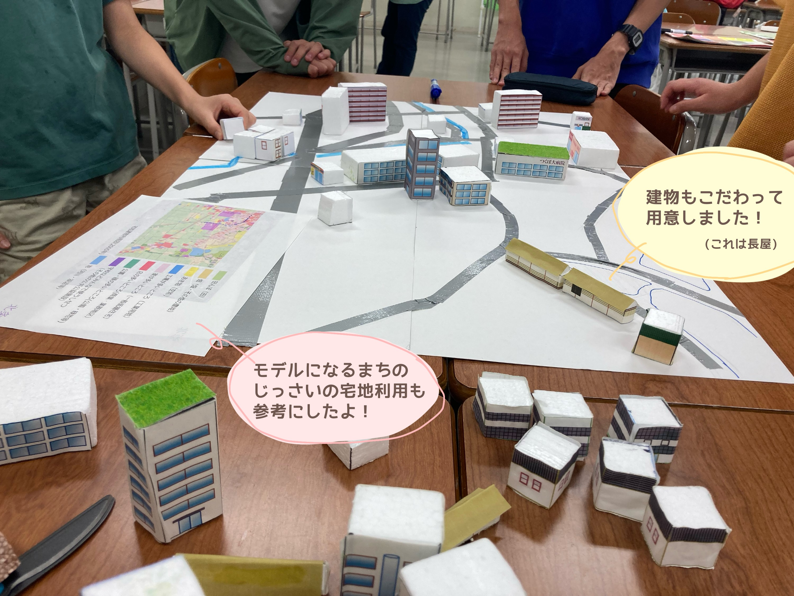
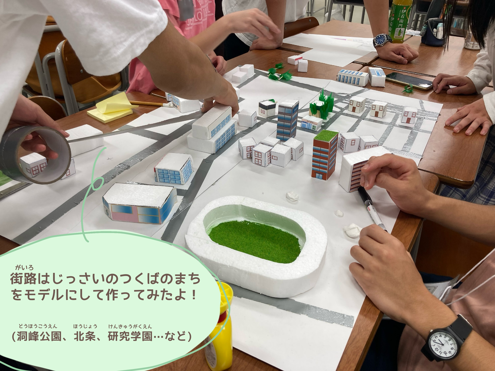
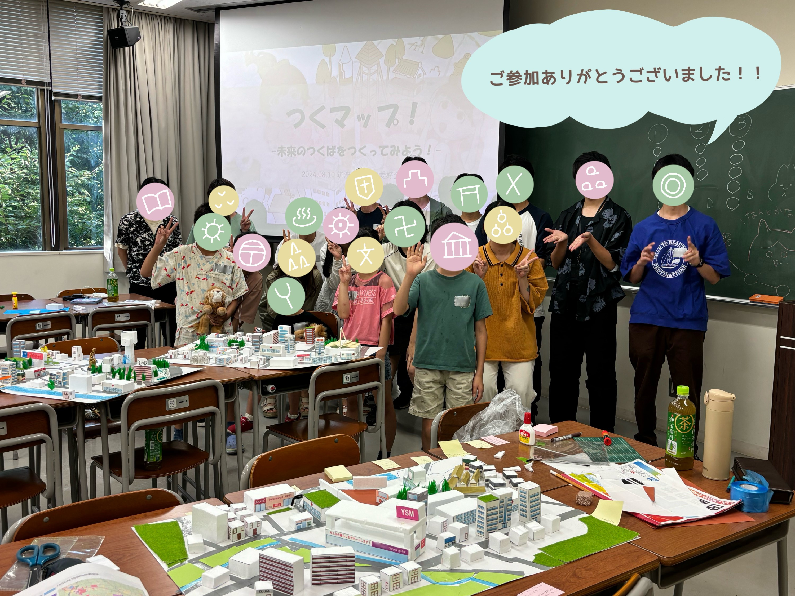

FEATURES
特集
地理系ワークショップ「つくマップ！」の第二回を開催しました
2024/8/10
2024年8月10日に、小学生を対象とした地理系ワークショップ「つくマップ！」を開催しました。 昨年度に続き、地図を主軸としたワークショップですが、今回は「未来のつくば市づくり」をテーマに設定しました。 実際の宅地利用を参考にしながら、事前に会員が作成した街区をもとに建物などを設置し自由に未来のつくば市をつくることができました。また、小学生と相談しながら発泡スチロールを切って理想の小学校を作りました。「ショッピングモールもいいけど、昔ながらの田んぼの風景も残したい」「まちのシンボルになるスタジアムを作りたい」など、会員と相談しながら思い思いのつくば市を作ることができました。
   